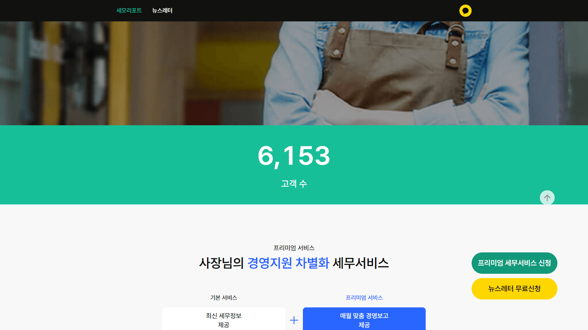

WORK DETAIL
세모리포트 모바일 홈페이지(수임처용)
Jquery / AWS
모바일 및 테블릿 반응형을 위한 세모리포트 수임처용 적응형 홈페이지.
모바일로 접속시 www -> m 서브도메인으로 리다이렉트 처리
post 방식의 ajax 통신을 통해 고객수 및 프리미엄 세무서비스 신청자목록을 보여줌

카운팅 애니메이션(odometer.js)을 통해 사용자의 이목을 끌 수 있음
테블릿 및 모바일 반응형
1. 디바이스 및 작업 기준
| 구분 | 기준 | 비고 |
|---|---|---|
| 디바이스 |
Mobile(Android/Ios) Tablet |
|
| 반응형 중단점(Break Point) | Screen Small-Width 360px | |
| HTML 파일명 | index.html |
2. 폴더 및 파일 기준
| 구분 | 폴더명 | 하위폴더 및 파일 | 비고 |
|---|---|---|---|
| HTML 마크업 페이지 | /SEMO2_0/SEMOR_MOB_HP | index.html | |
| HTML Index | index.html | ||
| 공통 CSS 01. | css/ | reset.css | |
| 공통 CSS 02.(라이브러리) | css/ |
swiper.min.css odometer-theme-default.css |
|
| 업무 CSS. | css/ | semo.css | |
| 공통 Font 01. | font/ |
Pretendard-Light.woff2 Pretendard-Regular.woff2 Pretendard-Medium.woff2 Pretendard-SemiBold.woff2 Pretendard-Bold.woff2 Pretendard-ExtraBold.woff2 |
|
| 이미지 리소스 01. | img/ | ||
| 업무 JS 01. | js/ | semo.api.js | |
| UX용 JS 01.(라이브러리) | js/ |
jquery-3.5.1.min.js swiper-bundle.min.js odometer.js |